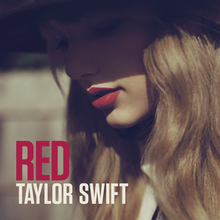
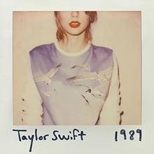

Tempat Kelahiran Taylor Swift

Taylor Alison Swift (lahir 13 Desember 1989) adalah pemeran, penyanyi-penulis lagu berkebangsaan Amerika Serikat. Penulisan lagu naratifnya, yang sering berpusat di sekitar kehidupan pribadinya, telah menerima pujian kritis dan liputan media yang luas. Lahir di West Reading, Pennsylvania,[5] Taylor Swift pindah ke Nashville, Tennessee pada ia beruusia 14 tahun untuk mengawali kariernya di musik country.
Ayahnya, Scott Kingsley Swift, dulunya bekerja sebagai penasihat keuangan Merrill Lynch, dan ibunya, Andrea Gardner Swift (nama belakang Finlay), seorang ibu rumah tangga yang dulunya bekerja sebagai seorang eksekutif penjualan dana bersama.[6] Swift, yang menyatakan dia mempunyai keturunan Skotlandia, dinamai seperti nama penyanyi-penulis lagu James Taylor. Adik laki-lakinya, Austin Kingsley Swift, adalah seorang aktor.[7] Swift menghabiskan awal-awal tahun hidupnya di sebuah perkebunan pohon Natal yang ayahnya beli dari salah satu kliennya.[8] Swift mengidentifikasi dirinya sebagai seorang Kristen. Dia memasuki prasekolah dan taman kanak-kanak di Alvernia Montessori School, yang dijalankan oleh biarawati-biarawati Fransiska,[9] sebelum pindah ke The Wyndcroft School.[10] Keluarga ini kemudian pindah ke sebuah rumah sewa di pinggiran kota Wyomissing, Pennsylvania,[11] yang mana dia memasuki Wyomissing Area Junior/Senior High School.[12].
Karir Taylor Swift

Di Nashville, Swift bekerja dengan penulis lagu berpengalaman Music Row seperti Troy Verges, Brett Beavers, Brett James, Mac McAnally, dan The Warren Brothers.[28][29] Swift dikontrak oleh Sony/ATV Tree publishing house,[30] tetapi keluar dari RCA Records ketika berumur 14 tahun.[16]
Pada sebuah pertunjukan industri di Bluebird Cafe di Nashville pada tahun 2005, Swift menarik perhatian Scott Borchetta, seorang eksekutif DreamWorks Records yang sedang bersiap untuk mendirikan label rekaman independennya sendiri, Big Machine Records. Dia menjadi orang pertama yang dikontrak, dan ayahnya membeli tiga persen saham di perusahaan baru ini yang bernilai $120,000.[31][32] Swift mulai bekerja di debut album yang sama dengan namanya tak lama setelah dikontrak. Swift menulis tiga lagu dari album sendiri, dan ikut menulis delapan lainnya dengan penulis lain yaitu Rose, Robert Ellis Orrall, Brian Maher, dan Angelo Petraglia.[33] Taylor Swift dirilis pada tanggal 24 Oktober 2006.[34] Taylor Swift berada di nomor lima di Billboard 200 dan menghabiskan 157 minggu di tangga album ini, membuatnya menjadi album terlama yang berada di tangga lagu tahun 2000-an.[35]
Taylor Swift (2006)

Di Nashville, Swift bekerja dengan penulis lagu berpengalaman Music Row seperti Troy Verges, Brett Beavers, Brett James, Mac McAnally, dan The Warren Brothers.[28][29] Swift dikontrak oleh Sony/ATV Tree publishing house,[30] tetapi keluar dari RCA Records ketika berumur 14 tahun.[16]
Pada sebuah pertunjukan industri di Bluebird Cafe di Nashville pada tahun 2005, Swift menarik perhatian Scott Borchetta, seorang eksekutif DreamWorks Records yang sedang bersiap untuk mendirikan label rekaman independennya sendiri, Big Machine Records. Dia menjadi orang pertama yang dikontrak, dan ayahnya membeli tiga persen saham di perusahaan baru ini yang bernilai $120,000.[31][32] Swift mulai bekerja di debut album yang sama dengan namanya tak lama setelah dikontrak. Swift menulis tiga lagu dari album sendiri, dan ikut menulis delapan lainnya dengan penulis lain yaitu Rose, Robert Ellis Orrall, Brian Maher, dan Angelo Petraglia.[33] Taylor Swift dirilis pada tanggal 24 Oktober 2006.[34] Taylor Swift berada di nomor lima di Billboard 200 dan menghabiskan 157 minggu di tangga album ini, membuatnya menjadi album terlama yang berada di tangga lagu tahun 2000-an.[35]
fearless(2008)
.png)
Fearless adalah album studio kedua karya penyanyi-penulis lagu asal Amerika, Taylor Swift. Album ini dirilis pada 11 November 2008 oleh Big Machine Records di AS dan Kanada, edisi internasionalnya dirilis pada 9 Maret 2009. Sebagian besar ditulis selama Swift mempromosikan album debut eponimnya pada tahun 2007–2008, Fearless berisi penulisan lagu tambahan dari Liz Rose, Hillary Lindsey, Colbie Caillat, dan John Rich. Swift menulis tujuh dari tiga belas lagu dalam edisi standar album ini seorang diri, dan, dalam debutnya sebagai seorang produser rekaman, memproduksi seluruh lagunya bersama Nathan Chapman.Fearless adalah album studio kedua karya penyanyi-penulis lagu asal Amerika, Taylor Swift. Album ini dirilis pada 11 November 2008 oleh Big Machine Records di AS dan Kanada, edisi internasionalnya dirilis pada 9 Maret 2009. Sebagian besar ditulis selama Swift mempromosikan album debut eponimnya pada tahun 2007–2008, Fearless berisi penulisan lagu tambahan dari Liz Rose, Hillary Lindsey, Colbie Caillat, dan John Rich. Swift menulis tujuh dari tiga belas lagu dalam edisi standar album ini seorang diri, dan, dalam debutnya sebagai seorang produser rekaman, memproduksi seluruh lagunya bersama Nathan Chapman.
Speak Now

Speak Now adalah album studio ketiga karya penyanyi-penulis lagu asal Amerika Taylor Swift, dirilis pada 25 Oktober 2010 melalui Big Machine Records.
Red

Red adalah album studio keempat karya penyanyi-penulis lagu asal Amerika Serikat, Taylor Swift. Album ini dirilis pada 22 Oktober 2012 oleh Big Machine Records. Judulnya merujuk kepada emosi "merah" yang riuh yang dialami Swift dalam pengonsepan album ini; lagu-lagunya mendiskusikan perasaan-perasaan yang rumit dan bertentangan sebagai akibat dari romansa yang memudar..
1989

Album kelima Taylor Swift berjudul 1989 dirilis pada 27 Oktober 2014. Album ini juga menghabiskan 11 minggu di puncak tangga lagu Billboard 200. Album ini pun memenangkan Album of the Year di Grammy sekaligus menjadikan Taylor sebagai artis solo perempuan pertama dengan dua kali penghargaan.
Prestasi Taylor

GRAMMY AWARDS
Taylor Swift telah memenangkan banyak Grammy Awards, termasuk Album of the Year untuk "Fearless," "Speak Now," "Red," dan "1989.
BILLBOARD HOT 100
Dia memiliki banyak single yang mencapai posisi puncak di Billboard Hot 100, termasuk hits seperti "Love Story," "Shake It Off," dan "Blank Space.
ALBUM TERLARIS
Taylor Swift dikenal dengan album-album terlarisnya, termasuk "1989," "Red," dan "Folklore.
PENJUALAN REKOR
taylor swift adalah salah satu artis dengan penjualan album terbanyak di dekade ini dan telah memecahkan beberapa rekor penjualan di berbagai negara.
PENGARUH BUDAYA
Taylor Swift juga dikenal karena pengaruhnya dalam industri musik dan budaya pop, serta keterlibatannya dalam berbagai kegiatan filantropi dan advokasi sosial.
Penampilan di MTV Video Music Awards (VMAs)
Taylor Swift telah memenangkan banyak penghargaan di VMAs, termasuk Video of the Year